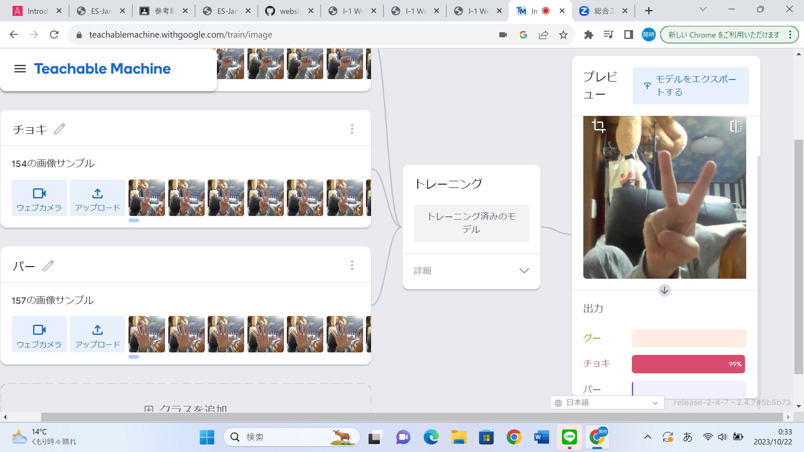

第2週目
2-1 １週目のレポートをHTMLで作る
１週目のレポート
1.内容
プログラミングのコードの途中に自分の入れたい文をいれ，それをウェブサイトに対応させることでウェブサイトを完成される．
2.感想
いつもと異なったレポートの提出方法で最初はやり方がわからなかったが，レポートを進めるうちに原理を理解してできるようになった．
2-2 機械学習体験

1.内容
AIなどの機械学習について自分の手の形を認識するAIを用いて学んだ．
2.感想
最近に話題になってきているAIについてさらに深く知ることができ，とてもよかった．
2-3 VR（バーチャルリアリティー：Virtual Reality）会議室の体験
1.内容
VR専用の機械を用いてVRを一人一人体験した．
2.感想
かなり前からVRには興味をもっていたが，機材が高くてなにもできなかったため，ついにVRができた今回の実習はとても楽しかった．